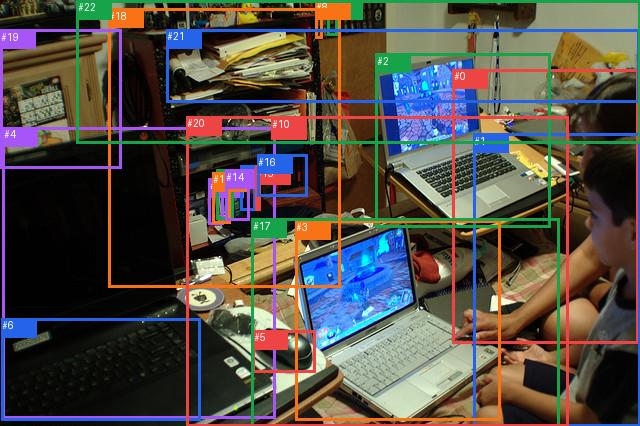

rank_below50_0012

完整GT
| 主体 | GT谓词 | 客体 |
|---|
| 0 | attached to | 1 |
| 0 | looking at | 3 |
| 0 | touching | 3 |
| 1 | attached to | 0 |
| 1 | looking at | 3 |
| 3 | on | 20 |
| 4 | in front of | 19 |
| 4 | on | 20 |
| 6 | attached to | 4 |
| 16 | on | 18 |
| 16 | on | 18 |
| 21 | on | 18 |
预测top50
| 排名 | 主体→谓词→客体 | score | fused logit | 是否GT |
|---|
| 1 | #7 → hanging from → #22 | 0.991884 | 4.805725 | False |
| 2 | #8 → hanging from → #22 | 0.989173 | 4.514803 | False |
| 3 | #21 → on → #22 | 0.971111 | 3.514983 | False |
| 4 | #3 → on → #20 | 0.957967 | 3.126365 | True |
| 5 | #13 → on → #18 | 0.955451 | 3.065600 | False |
| 6 | #9 → on → #18 | 0.954333 | 3.039646 | False |
| 7 | #14 → on → #18 | 0.953554 | 3.021903 | False |
| 8 | #5 → on → #17 | 0.953092 | 3.011516 | False |
| 9 | #12 → on → #18 | 0.951681 | 2.980399 | False |
| 10 | #10 → on → #18 | 0.951223 | 2.970500 | False |
| 11 | #6 → on → #4 | 0.950131 | 2.947203 | False |
| 12 | #3 → on → #17 | 0.947364 | 2.890289 | False |
| 13 | #2 → on → #20 | 0.944140 | 2.827416 | False |
| 14 | #5 → on → #20 | 0.941089 | 2.771013 | False |
| 15 | #1 → sitting on → #20 | 0.935944 | 2.681794 | False |
| 16 | #11 → on → #18 | 0.934510 | 2.658132 | False |
| 17 | #16 → on → #18 | 0.928477 | 2.563530 | True |
| 18 | #7 → hanging from → #18 | 0.927216 | 2.544695 | False |
| 19 | #1 → sitting on → #17 | 0.925311 | 2.516795 | False |
| 20 | #1 → sitting on → #0 | 0.923239 | 2.487190 | False |
| 21 | #4 → on → #20 | 0.916794 | 2.399568 | True |
| 22 | #5 → beside → #3 | 0.910665 | 2.321778 | False |
| 23 | #17 → on → #20 | 0.901423 | 2.213140 | False |
| 24 | #1 → looking at → #3 | 0.896573 | 2.159718 | True |
| 25 | #0 → looking at → #2 | 0.876495 | 1.959648 | False |
| 26 | #0 → sitting on → #20 | 0.873014 | 1.927875 | False |
| 27 | #19 → leaning on → #22 | 0.869975 | 1.900735 | False |
| 28 | #15 → on → #18 | 0.869335 | 1.895093 | False |
| 29 | #8 → hanging from → #18 | 0.862826 | 1.838962 | False |
| 30 | #0 → on → #17 | 0.840183 | 1.659588 | False |
| 31 | #1 → looking at → #4 | 0.834268 | 1.616184 | False |
| 32 | #16 → on → #20 | 0.815977 | 1.489322 | False |
| 33 | #2 → on → #17 | 0.809717 | 1.448170 | False |
| 34 | #9 → on → #20 | 0.804392 | 1.413975 | False |
| 35 | #0 → on → #3 | 0.804289 | 1.413322 | False |
| 36 | #10 → on → #20 | 0.804285 | 1.413294 | False |
| 37 | #14 → on → #20 | 0.802505 | 1.402024 | False |
| 38 | #1 → looking at → #2 | 0.797949 | 1.373521 | False |
| 39 | #19 → beside → #18 | 0.791934 | 1.336623 | False |
| 40 | #13 → on → #20 | 0.788991 | 1.318854 | False |
| 41 | #12 → on → #20 | 0.780488 | 1.268511 | False |
| 42 | #11 → on → #20 | 0.758748 | 1.145826 | False |
| 43 | #15 → on → #20 | 0.744777 | 1.070946 | False |
| 44 | #5 → on → #4 | 0.732395 | 1.006808 | False |
| 45 | #22 → in → #21 | 0.702827 | 0.860795 | False |
| 46 | #7 → on → #21 | 0.609583 | 0.445558 | False |
| 47 | #4 → on → #17 | 0.607652 | 0.437454 | False |
| 48 | #8 → on → #21 | 0.606359 | 0.432032 | False |
| 49 | #6 → on → #17 | 0.581120 | 0.327373 | False |
| 50 | #4 → in → #6 | 0.568754 | 0.276770 | False |
每个GT的采样、谓词与融合定位
| GT方向 | GT谓词 | 阶段 | slot | 最佳谓词 | GT词logit | pair logit | GT融合logit | GT词对内rank |
|---|
| #0→#1 | attached to | wrong_predicate | 133 | beside | -0.9996993541717529 | -0.8789913654327393 | -1.8786907196044922 | 12 |
| #0→#3 | looking at | wrong_predicate | 31 | on | 1.7977161407470703 | -0.39419257640838623 | 1.403523564338684 | 2 |
| #0→#3 | touching | wrong_predicate | 31 | on | 1.1642546653747559 | -0.39419257640838623 | 0.7700620889663696 | 5 |
| #1→#0 | attached to | wrong_predicate | 37 | sitting on | -1.579780101776123 | -0.4529850482940674 | -2.0327651500701904 | 17 |
| #1→#3 | looking at | hit50 | 15 | looking at | 2.1692705154418945 | -0.009552448987960815 | 2.1597180366516113 | 1 |
| #3→#20 | on | hit50 | 13 | on | 3.016115188598633 | 0.11024999618530273 | 3.1263651847839355 | 1 |
| #4→#19 | in front of | rank_below50 | 174 | in front of | -1.287604570388794 | -1.2839643955230713 | -2.5715689659118652 | 1 |
| #4→#20 | on | hit50 | 21 | on | 2.534944534301758 | -0.1353766918182373 | 2.3995678424835205 | 1 |
| #6→#4 | attached to | wrong_predicate | 14 | on | 2.123810291290283 | -0.0012576580047607422 | 2.1225526332855225 | 2 |
| #16→#18 | on | hit50 | 1 | on | 1.8391098976135254 | 0.7244203090667725 | 2.563530206680298 | 1 |
| #21→#18 | on | rank_below50 | 122 | on | -1.6796107292175293 | -0.8211367130279541 | -2.5007474422454834 | 1 |